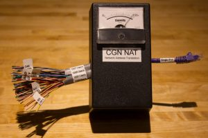

In light of the IPv4 address scarcity problem, one approach towards prolonging the life of current IPv4 address allocations is to deploy Carrier Grade NATs (CGNs), where Internet Service Providers (ISPs) share the same public IPv4 address across multiple end users. CGNs may bring a number of challenges for end users, service providers, content providers and government authorities. For example, there is some evidence that CGNs can cause dropped services in peer-to-peer applications, and lead to low performance of file transfer and video streaming sessions. Despite all this, CGNs offer an immediate relief to the IPv4 address scarcity problem, so it is likely that their popularity will increase over time.

Given the potentially disruptive impact of what seems a likely future scenario, it behooves policymakers, ISPs and Internet users to monitor the extent of CGN deployment in the Internet. But like many aspects of Internet structure, systematic measurement and monitoring of CGN deployment in the wide area is challenging. The MAMI project through Simula Research Laboratory, together with external collaborators at University Carlos III of Madrid and CAIDA/UCSD worked towards addressing this challenge. We built and perfected NAT Revelio, a tool that enables us to actively determine from within residential networks the type of upstream network address translation, namely NAT at the home gateway (customer-grade NAT) or NAT in the ISP (Carrier Grade NAT). Check our talk at PAM 2016 for an overview of how Revelio works.
We deployed Revelio on two large-scale hardware-based measurement platforms – RIPE Atlas in Europe and the FCC Measuring Broadband America (FCC-MBA) in the U.S. – with a total of 5,121 vantage points in over 60 ISPs. The FCC-MBA deployment consisted of 2,477 home routers operated by SamKnows in 21 large residential broadband Internet access service providers in the U.S. We also executed the Revelio tests from 2,644 Atlas probes in 43 ISPs mainly active in Europe. We ran the measurement campaign in two phases (May 2016 and August 2016) on both platforms. Based on the experimental results from the first phase (May 2016), we enhanced the test suite to account for a wide diversity of home network topologies and various access technologies. In the second phase of the measurement campaign (August 2016) we deployed the evolved Revelio suite to investigate the state of CGN deployment in broadband networks.
Our results show that 10% (6 out of 64) of the ISPs we tested have some form of CGN deployment. In particular, one ISP has a large-scale deployment where Revelio detected upstream CGN deployment from all 76 vantage points in that ISP. In the other 5 ISPs we observed evidence of a localized deployment limited to a subset of customers. We verified our results with representatives of the ISPs to validate our positive and negative inferences at the IP level. We confirmed the results for 4 of the 6 positive ISPs by personal communications with ISP representatives. The combination of the FCC-MBA and RIPE Atlas study represents (to the best of our knowledge) the largest active measurement study to date with confirmed CGN deployments in broadband networks at the IP-level granularity.
For a more in-depth analysis of our measurements please visit the openly available technical report.